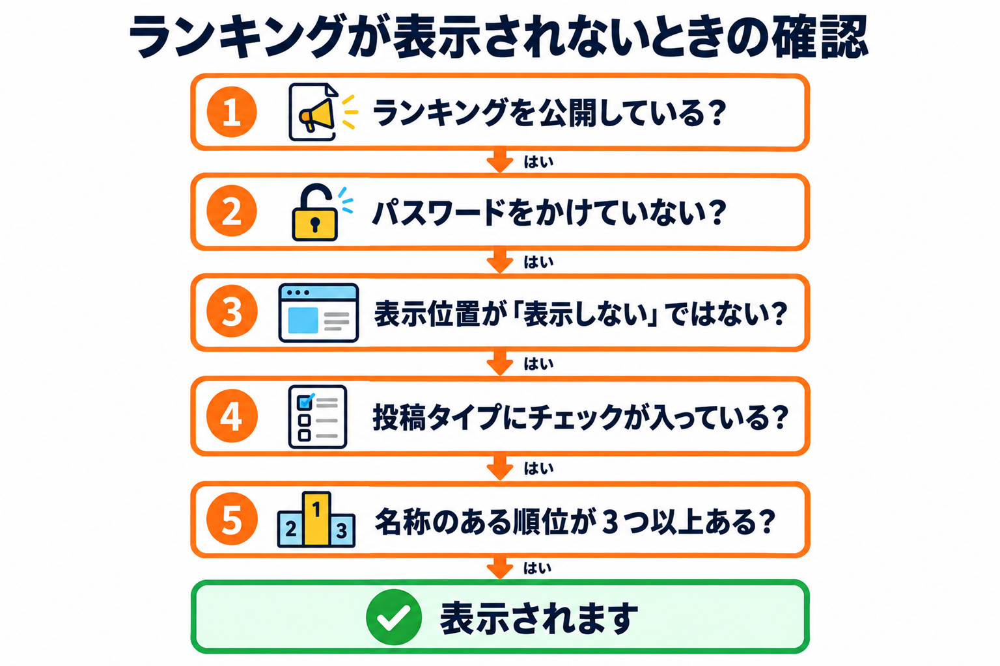

トラブルシューティング
よくある困りごとと、確認する順番をまとめています。

ランキングが表示されない
次の順に確かめます。
| 順 | 確かめること | 対処 |
|---|---|---|
| 1 | ランキングを公開している | ランキング一覧で、状態が公開済みか確かめます。下書き・レビュー待ち・非公開・ゴミ箱のランキングは、ページに表示されません。ランキングの編集画面で「公開」してください。 |
| 2 | ランキングにパスワードを付けていない | 公開中でも、ランキング自体にパスワードを付けていると、表示されません。ランキングの編集画面の「公開」ボックスで、公開範囲を確かめてください。 |
| 3 | ページの表示位置が「表示しない」ではない | ランキングを置きたいページの編集画面のボックスで、表示位置を確かめます。「表示しない」のときは、自動の表示も、id のないショートコードも、表示されません。 |
| 4 | 投稿タイプにチェックが入っている | 設定画面の「ランキングを選べる投稿タイプ」に、そのページの種類のチェックが入っているか確かめます。チェックが無いと、ボックスが出ず、自動の表示も働きません（ショートコードは、チェックに関係なく使えます）。 |
| 5 | 名称のある順位が 3 つ以上ある | ランキングの編集画面で、名称が入力された順位があるか確かめます。名称が空の順位は、表示されません。 |
| 6 | ページの種類と見え方 | 投稿の一覧ページ・抜粋・フィードには、自動では表示されません。ページ（個別のページ）を開いて確かめます。パスワードで守られたページは、パスワードを入力すると表示されます。 |
| 7 | ページのキャッシュ | キャッシュのプラグインやサービスをお使いのときは、ページのキャッシュを消して、もう一度開きます。 |
症状ごとの対処
ランキングを公開できず、下書きになる
- 原因：名称のある順位が 3 つに足りない、または、名称が空で説明か URL だけがある順位があります。
- 対処：メッセージの案内どおり、3 位までの名称を入力します。名称が空の順位は、名称を入力するか、削除します。ランキングの内容の「公開できる条件」を見てください。
公開中のランキングを直したのに、順位が変わらない
- 原因：公開中のランキングは、順位の入力が条件を満たさないとき、順位の変更だけが保存されません（ほかの項目は保存されます）。
- 対処：保存後のメッセージ「公開中のランキングは、3位以上の名称が必要です…」を確かめ、名称を入力してもう一度更新します。
ボタンが表示されない・名称がリンクにならない
- 原因：その順位の URL が空、または使えない形です（
javascript:など）。 - 対処：URL を
https://かhttp://で始まる形、または「/」で始まるサイト内のパスで入力します。
ページの編集画面に、ボックスが出ない
- 原因：そのページの投稿タイプに、設定画面でチェックが入っていません。
- 対処：設定画面の「ランキングを選べる投稿タイプ」にチェックを入れて、保存します。
ボックスのプルダウンに、ランキングが出てこない
- 原因：ランキングが、ゴミ箱に入っている、または、公開前で、お使いのアカウントでは編集できないランキングです。ランキングを新しくつくったあと、ページの画面を開いたままのときも、出てきません。
- 対処：ランキングを公開します。ページの編集画面を開き直します。
同じランキングが、2 回表示されない
- 原因：自動の表示と、ショートコードの両方で同じランキングを置いたときは、ショートコードの位置だけに表示する仕組みです。
- 対処：そのままで問題ありません。自動の表示の位置に出したいときは、ショートコードを外します。
構造化データが出力されない
- 原因：次のいずれかです。
- 設定画面の「構造化データの出力」がオフになっている。
- そのランキングの「出力」のチェックが外れている。
- そのページに、ランキングが表示されていない（構造化データは、表示したページにだけ出力されます）。
- 対処：構造化データのページの「出力のオン・オフ」を見て、設定を確かめます。
Search Console に、商品に関する注意が表示される
- 原因：「おすすめする対象の種類」で「商品（Product）」を選んでいます。このプラグインは価格や評価を出力しないため、Google の商品のリッチリザルトの対象にはなりません。
- 対処：商品か決めかねるときは、「指定しない（Thing）」を選びます。
ランキングの見た目が、テーマによって違う
- 原因：文字の大きさ・フォント・見出しの飾りは、お使いのテーマのものが使われます。
- 対処：ランキングの編集画面の「プレビュー」や、設定画面の「見本」でも、同じ違いが出ます。色や型で、サイトに合う形を選んでください。
色を明るくしたら、文字が読めなくなるのでは
- メインの色の上の文字（順位の数字・ボタンの文字）は、読みやすいほうの色（白か黒）が自動で選ばれるので、明るい色にしても読めます。ページの地の上の文字は、テーマの文字の色のままです。
ランキングを更新したのに、ページが変わらない
- 原因：ページのキャッシュが残っています。
- 対処：キャッシュのプラグインやサービスで、そのページのキャッシュを消します。
一覧の「使っているページ」が「—」になっている
- どのページも、そのランキングを選んでおらず、本文にそのランキングの id を書いたショートコードもありません。ゴミ箱に入ったページは、数えません。
一覧の「順位」が「—」になっている
- そのランキングの中身を見る権限がないときの表示です（ほかの人の下書きなど）。
「設定」のタブ・リンクが見えない
- 設定画面は、管理者だけが開けます。管理者のアカウントでログインしてください。
複製したランキングが、ページに表示されない
- 原因：複製は下書きでつくられ、もとのランキングを選んでいたページの選択は、コピーされません。
- 対処：複製の内容を確かめて「公開」し、使いたいページの編集画面で、複製したランキングを選びます。
プレビューが表示されない
- 原因：名称が 1 つも入力されていない、または、プレビューの更新に失敗しています。
- 対処：名称を入力します。「プレビューを作れませんでした。」と出るときは、通信の状態を確かめ、画面を開き直します。
それでも解決しないとき
- ほかのプラグインやテーマの影響を確かめるため、ほかのプラグインをいったん停止して、表示を確かめます。
- WordPress とテーマ・プラグインを最新にして、もう一度確かめます。
- それでも直らないときは、GitHub のリポジトリの Issues に、お使いの WordPress とテーマの名前と、起きていることを書いて、お知らせください。